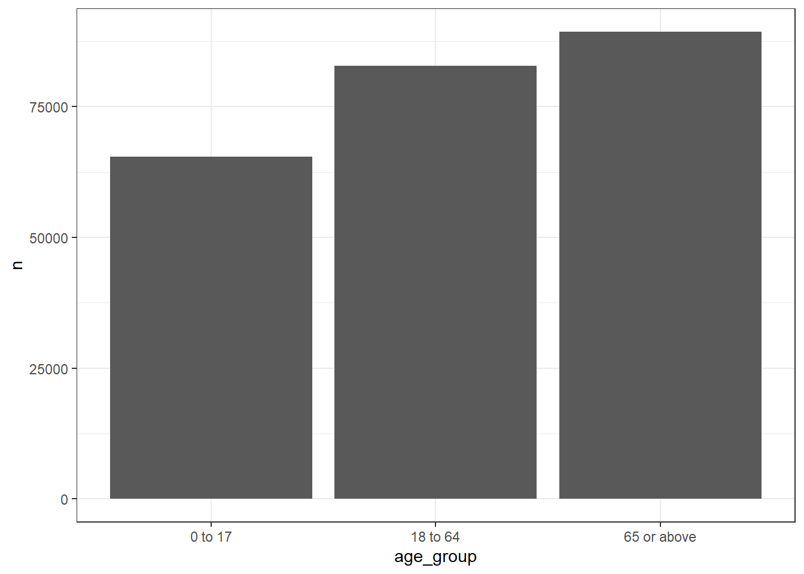

library(DBI)
library(dbplyr)
library(dplyr)
library(here)
library(CDMConnector)
library(PatientProfiles)
library(ggplot2)4 Identifying patient characteristics
For this chapter, we’ll again use our example COVID-19 dataset.
db<-dbConnect(duckdb::duckdb(),
dbdir = eunomiaDir(datasetName = "synthea-covid19-10k"))
cdm <- cdm_from_con(db,
cdm_schema = "main",
write_schema = "main")As part of an analysis we almost always have a need to identify certain characteristics related to the individuals in our data. These characteristics might be time-invariant (ie a characteristic that does not change as time passes and a person ages) or time-varying.1
4.1 Adding specific demographics
The PatientProfiles package makes it easy for us to add demographic information to tables in the OMOP CDM. Like the CDMConnector package we’ve seen previously, the fact that the structure of the OMOP CDM is known allows the PatientProfiles package to abstract away some common data manipulations required to do research with patient-level data.2
Let’s say we are interested in individuals’ age and sex at time of diagnosis with COVID-19. We can add these variables to the table like so (noting that because age is time-varying, we have to specify the variable with the date for which we want to calculate age relative to).
cdm$condition_occurrence <- cdm$condition_occurrence |>
addSex() |>
addAge(indexDate = "condition_start_date")
cdm$condition_occurrence |>
glimpse()Rows: ??
Columns: 18
Database: DuckDB v1.0.0 [eburn@Windows 10 x64:R 4.4.0/C:\Users\eburn\AppData\Local\Temp\RtmpAdcDS1\file26d45fb06b98.duckdb]
$ condition_occurrence_id <int> 1, 2, 3, 4, 5, 6, 7, 8, 9, 10, 11, 12, 1…
$ person_id <int> 2, 6, 7, 8, 8, 8, 8, 16, 16, 18, 18, 25,…
$ condition_concept_id <int> 381316, 321042, 381316, 37311061, 437663…
$ condition_start_date <date> 1986-09-08, 2021-06-23, 2021-04-07, 202…
$ condition_start_datetime <dttm> 1986-09-08, 2021-06-23, 2021-04-07, 202…
$ condition_end_date <date> 1986-09-08, 2021-06-23, 2021-04-07, 202…
$ condition_end_datetime <dttm> 1986-09-08, 2021-06-23, 2021-04-07, 202…
$ condition_type_concept_id <int> 38000175, 38000175, 38000175, 38000175, …
$ condition_status_concept_id <int> 0, 0, 0, 0, 0, 0, 0, 0, 0, 0, 0, 0, 0, 0…
$ stop_reason <chr> NA, NA, NA, NA, NA, NA, NA, NA, NA, NA, …
$ provider_id <int> NA, NA, NA, NA, NA, NA, NA, NA, NA, NA, …
$ visit_occurrence_id <int> 19, 55, 67, 79, 79, 79, 79, 168, 171, 19…
$ visit_detail_id <int> 1000019, 1000055, 1000067, 1000079, 1000…
$ condition_source_value <chr> "230690007", "410429000", "230690007", "…
$ condition_source_concept_id <int> 381316, 321042, 381316, 37311061, 437663…
$ condition_status_source_value <chr> NA, NA, NA, NA, NA, NA, NA, NA, NA, NA, …
$ sex <chr> "Female", "Male", "Male", "Male", "Male"…
$ age <int> 57, 25, 97, 2, 2, 2, 2, 75, 77, 57, 76, …We now have two variables added containing values for age and sex.
cdm$condition_occurrence |>
glimpse()Rows: ??
Columns: 18
Database: DuckDB v1.0.0 [eburn@Windows 10 x64:R 4.4.0/C:\Users\eburn\AppData\Local\Temp\RtmpAdcDS1\file26d45fb06b98.duckdb]
$ condition_occurrence_id <int> 1, 2, 3, 4, 5, 6, 7, 8, 9, 10, 11, 12, 1…
$ person_id <int> 2, 6, 7, 8, 8, 8, 8, 16, 16, 18, 18, 25,…
$ condition_concept_id <int> 381316, 321042, 381316, 37311061, 437663…
$ condition_start_date <date> 1986-09-08, 2021-06-23, 2021-04-07, 202…
$ condition_start_datetime <dttm> 1986-09-08, 2021-06-23, 2021-04-07, 202…
$ condition_end_date <date> 1986-09-08, 2021-06-23, 2021-04-07, 202…
$ condition_end_datetime <dttm> 1986-09-08, 2021-06-23, 2021-04-07, 202…
$ condition_type_concept_id <int> 38000175, 38000175, 38000175, 38000175, …
$ condition_status_concept_id <int> 0, 0, 0, 0, 0, 0, 0, 0, 0, 0, 0, 0, 0, 0…
$ stop_reason <chr> NA, NA, NA, NA, NA, NA, NA, NA, NA, NA, …
$ provider_id <int> NA, NA, NA, NA, NA, NA, NA, NA, NA, NA, …
$ visit_occurrence_id <int> 19, 55, 67, 79, 79, 79, 79, 168, 171, 19…
$ visit_detail_id <int> 1000019, 1000055, 1000067, 1000079, 1000…
$ condition_source_value <chr> "230690007", "410429000", "230690007", "…
$ condition_source_concept_id <int> 381316, 321042, 381316, 37311061, 437663…
$ condition_status_source_value <chr> NA, NA, NA, NA, NA, NA, NA, NA, NA, NA, …
$ sex <chr> "Female", "Male", "Male", "Male", "Male"…
$ age <int> 57, 25, 97, 2, 2, 2, 2, 75, 77, 57, 76, …And with these now added it is straightforward to calculate mean age at condition start date by sex or even plot the distribution of age at diagnosis by sex.
cdm$condition_occurrence |>
summarise(mean_age = mean(age, na.rm=TRUE), .by = "sex") |>
collect()# A tibble: 2 × 2
sex mean_age
<chr> <dbl>
1 Female 50.8
2 Male 56.5cdm$condition_occurrence |>
select("person_id", "age", "sex") |>
collect() |>
ggplot(aes(fill = sex)) +
facet_grid(sex ~ .) +
geom_histogram(aes(age), colour = "black", binwidth = 5) +
theme_bw() +
theme(legend.position = "none")
4.2 Adding multiple demographics simultaneously
We’ve now seen individual functions from PatientProfiles to add age and sex, and the package has others to add other characteristics like days of prior observation in the database (rather unimaginatively named PatientProfiles::addPriorObservation()). In additional to these individuals functions, the package also provides a more general function to get all of these characteristics at the same time.3
cdm$drug_exposure <- cdm$drug_exposure |>
addDemographics(indexDate = "drug_exposure_start_date")
cdm$drug_exposure |>
glimpse()Rows: ??
Columns: 27
Database: DuckDB v1.0.0 [eburn@Windows 10 x64:R 4.4.0/C:\Users\eburn\AppData\Local\Temp\RtmpAdcDS1\file26d45fb06b98.duckdb]
$ drug_exposure_id <int> 245761, 245762, 245763, 245764, 245765, 2…
$ person_id <int> 7764, 7764, 7764, 7764, 7764, 7764, 7764,…
$ drug_concept_id <int> 40213227, 40213201, 40213198, 40213154, 4…
$ drug_exposure_start_date <date> 2015-02-08, 2010-01-10, 2010-01-10, 2017…
$ drug_exposure_start_datetime <dttm> 2015-02-08 22:40:04, 2010-01-10 22:40:04…
$ drug_exposure_end_date <date> 2015-02-08, 2010-01-10, 2010-01-10, 2017…
$ drug_exposure_end_datetime <dttm> 2015-02-08 22:40:04, 2010-01-10 22:40:04…
$ verbatim_end_date <date> 2015-02-08, 2010-01-10, 2010-01-10, 2017…
$ drug_type_concept_id <int> 32869, 32869, 32869, 32869, 32869, 32869,…
$ stop_reason <chr> NA, NA, NA, NA, NA, NA, NA, NA, NA, NA, N…
$ refills <int> 0, 0, 0, 0, 0, 0, 0, 0, 0, 0, 0, 0, 0, 0,…
$ quantity <dbl> 0, 0, 0, 0, 0, 0, 0, 0, 0, 0, 0, 0, 0, 0,…
$ days_supply <int> 0, 0, 0, 0, 0, 0, 0, 0, 0, 0, 0, 0, 0, 0,…
$ sig <chr> NA, NA, NA, NA, NA, NA, NA, NA, NA, NA, N…
$ route_concept_id <int> 0, 0, 0, 0, 0, 0, 0, 0, 0, 0, 0, 0, 0, 0,…
$ lot_number <chr> "0", "0", "0", "0", "0", "0", "0", "0", "…
$ provider_id <int> 14656, 14656, 14656, 14656, 14656, 14656,…
$ visit_occurrence_id <int> 80896, 80891, 80891, 80892, 80895, 80896,…
$ visit_detail_id <int> 1080896, 1080891, 1080891, 1080892, 10808…
$ drug_source_value <chr> "113", "33", "133", "140", "140", "140", …
$ drug_source_concept_id <int> 40213227, 40213201, 40213198, 40213154, 4…
$ route_source_value <chr> NA, NA, NA, NA, NA, NA, NA, NA, NA, NA, N…
$ dose_unit_source_value <chr> NA, NA, NA, NA, NA, NA, NA, NA, NA, NA, N…
$ age <int> 71, 66, 66, 73, 72, 71, 69, 67, 70, 68, 6…
$ sex <chr> "Male", "Male", "Male", "Male", "Male", "…
$ prior_observation <int> 2597, 742, 742, 3339, 2968, 2597, 1855, 1…
$ future_observation <int> 896, 2751, 2751, 154, 525, 896, 1638, 238…With these characteristics now all added, we can now calculate mean age, prior observation (how many days have passed since the individual’s most recent observation start date), and future observation (how many days until the individual’s nearest observation end date) at drug exposure start date by sex.
cdm$drug_exposure |>
summarise(mean_age = mean(age, na.rm=TRUE),
mean_prior_observation = mean(prior_observation, na.rm=TRUE),
mean_future_observation = mean(future_observation, na.rm=TRUE),
.by = "sex") |>
collect()# A tibble: 2 × 4
sex mean_age mean_prior_observation mean_future_observation
<chr> <dbl> <dbl> <dbl>
1 Male 43.0 2455. 1768.
2 Female 39.4 2096. 1661.4.3 Creating categories
When we add age, either via addAge or addDemographics, we can also add another variable containing age groups. These age groups are specified in a list of vectors, each of which contain the lower and upper bounds.
cdm$visit_occurrence <- cdm$visit_occurrence |>
addAge(indexDate = "visit_start_date",
ageGroup = list(c(0,17), c(18, 64),
c(65, Inf)))
cdm$visit_occurrence |>
# data quality issues with our synthetic data means we have
# some negative ages so will drop these
filter(age >= 0) |>
group_by(age_group) |>
tally() |>
collect() |>
ggplot() +
geom_col(aes(x = age_group, y = n)) +
theme_bw()
PatientProfiles also provides a more general function for adding categories. Can you guess it’s name? That’s right, we have PatientProfiles::addCategories() for this.
cdm$condition_occurrence |>
addPriorObservation(indexDate = "condition_start_date") |>
addCategories(
variable = "prior_observation",
categories = list("prior_observation_group" = list(
c(0, 364), c(365, Inf)
))
) |>
glimpse()Rows: ??
Columns: 20
Database: DuckDB v1.0.0 [eburn@Windows 10 x64:R 4.4.0/C:\Users\eburn\AppData\Local\Temp\RtmpAdcDS1\file26d45fb06b98.duckdb]
$ condition_occurrence_id <int> 1, 2, 3, 4, 5, 6, 7, 8, 9, 10, 11, 12, 1…
$ person_id <int> 2, 6, 7, 8, 8, 8, 8, 16, 16, 18, 18, 25,…
$ condition_concept_id <int> 381316, 321042, 381316, 37311061, 437663…
$ condition_start_date <date> 1986-09-08, 2021-06-23, 2021-04-07, 202…
$ condition_start_datetime <dttm> 1986-09-08, 2021-06-23, 2021-04-07, 202…
$ condition_end_date <date> 1986-09-08, 2021-06-23, 2021-04-07, 202…
$ condition_end_datetime <dttm> 1986-09-08, 2021-06-23, 2021-04-07, 202…
$ condition_type_concept_id <int> 38000175, 38000175, 38000175, 38000175, …
$ condition_status_concept_id <int> 0, 0, 0, 0, 0, 0, 0, 0, 0, 0, 0, 0, 0, 0…
$ stop_reason <chr> NA, NA, NA, NA, NA, NA, NA, NA, NA, NA, …
$ provider_id <int> NA, NA, NA, NA, NA, NA, NA, NA, NA, NA, …
$ visit_occurrence_id <int> 19, 55, 67, 79, 79, 79, 79, 168, 171, 19…
$ visit_detail_id <int> 1000019, 1000055, 1000067, 1000079, 1000…
$ condition_source_value <chr> "230690007", "410429000", "230690007", "…
$ condition_source_concept_id <int> 381316, 321042, 381316, 37311061, 437663…
$ condition_status_source_value <chr> NA, NA, NA, NA, NA, NA, NA, NA, NA, NA, …
$ sex <chr> "Female", "Male", "Male", "Male", "Male"…
$ age <int> 57, 25, 97, 2, 2, 2, 2, 75, 77, 57, 76, …
$ prior_observation <int> 3437, 2898, 2842, 872, 872, 872, 872, 23…
$ prior_observation_group <chr> "365 or above", "365 or above", "365 or …4.4 Adding custom variables
While PatientProfiles provides a range of functions that can help add characteristics of interest, you may also want to add other features . Obviously we can’t cover here all possible custom characteristics you may wish to add. However, two common groups of custom features are those that are derived from other variables in the same table and others that are taken from other tables and joined to our particular table of interest.
In the first case where we want to add a new variable derived from other variables in our table we’ll typically be using dplyr::mutate(). For example, perhaps we just want to add a new variable to our observation period table containing the year of individuals’ observation period start date. This is rather straightforward.
cdm$observation_period <- cdm$observation_period |>
mutate(observation_period_start_year = get_year(observation_period_start_date))
cdm$observation_period |>
glimpse()Rows: ??
Columns: 6
Database: DuckDB v1.0.0 [eburn@Windows 10 x64:R 4.4.0/C:\Users\eburn\AppData\Local\Temp\RtmpAdcDS1\file26d45fb06b98.duckdb]
$ observation_period_id <int> 1, 2, 3, 4, 5, 6, 7, 8, 9, 10, 11, 12, 1…
$ person_id <int> 1, 2, 3, 4, 5, 6, 7, 8, 9, 10, 11, 12, 1…
$ observation_period_start_date <date> 2014-05-09, 1977-04-11, 2014-04-19, 201…
$ observation_period_end_date <date> 2023-05-12, 1986-09-15, 2023-04-22, 202…
$ period_type_concept_id <int> 44814724, 44814724, 44814724, 44814724, …
$ observation_period_start_year <dbl> 2014, 1977, 2014, 2014, 2013, 2013, 2013…The second case is normally more complex task where adding a new variable involves joining to some other table. This table may well have been created by some intermediate query that we wrote to derive the variable of interest. For example, lets say we want to add each number of condition occurrence records for each individual to the person table (remember that we saw how to calculate this in the previous chapter). For this we will need to do a join between the person and condition occurrence tables (as some people might not have any records in the condition occurrence table). Here we’ll save the create a table containing just the information we’re interested in and compute to a temporary table.
condition_summary <- cdm$person |>
select("person_id") |>
left_join(cdm$condition_occurrence |>
group_by(person_id) |>
count(name = "condition_occurrence_records"),
by="person_id") |>
select("person_id", "condition_occurrence_records") |>
mutate(condition_occurrence_records = if_else(
is.na(condition_occurrence_records),
0, condition_occurrence_records)) |>
compute()
condition_summary |>
glimpse()Rows: ??
Columns: 2
Database: DuckDB v1.0.0 [eburn@Windows 10 x64:R 4.4.0/C:\Users\eburn\AppData\Local\Temp\RtmpAdcDS1\file26d45fb06b98.duckdb]
$ person_id <int> 2, 6, 7, 8, 16, 18, 25, 36, 40, 44, 47, 5…
$ condition_occurrence_records <dbl> 1, 1, 1, 4, 2, 2, 1, 4, 1, 2, 5, 1, 3, 2,…We can see what goes on behind the scenes by viewing the associated SQL.
cdm$person |>
select("person_id") |>
left_join(cdm$condition_occurrence |>
group_by(person_id) |>
count(name = "condition_occurrence_records"),
by="person_id") |>
select("person_id", "condition_occurrence_records") |>
mutate(condition_occurrence_records = if_else(
is.na(condition_occurrence_records),
0, condition_occurrence_records)) |>
show_query()<SQL>
SELECT
person_id,
CASE WHEN ((condition_occurrence_records IS NULL)) THEN 0.0 WHEN NOT ((condition_occurrence_records IS NULL)) THEN condition_occurrence_records END AS condition_occurrence_records
FROM (
SELECT person.person_id AS person_id, condition_occurrence_records
FROM main.person
LEFT JOIN (
SELECT person_id, COUNT(*) AS condition_occurrence_records
FROM og_002_1718446181
GROUP BY person_id
) RHS
ON (person.person_id = RHS.person_id)
) q01
Taking care with joins
When adding variables through joins we need to pay particular attention to the dimensions of the resulting table. While sometimes we may want to have additional rows added as well as new columns, this is often not desired. If we, for example, have a table with one row per person then a left join to a table with multiple rows per person can then result in a table with multiple rows per person.
Examples where to be careful include when joining to the observation period table, as individuals can have multiple observation periods, and when working with cohorts (which are the focus of the next chapter) as individuals can also enter the same study cohort multiple times.
Just to underline how problematic joins can become if we don’t take care, here we join the condition occurrence table and the drug exposure table both of which have multiple records per person. Remember this is just with our small synthetic data, so when working with real patient data which is oftentimes much, much larger this would be extremely problematic (and would unlikely be needed to answer any research question). In other words, don’t try this at home!
cdm$condition_occurrence |>
tally()# Source: SQL [1 x 1]
# Database: DuckDB v1.0.0 [eburn@Windows 10 x64:R 4.4.0/C:\Users\eburn\AppData\Local\Temp\RtmpAdcDS1\file26d45fb06b98.duckdb]
n
<dbl>
1 9967cdm$drug_exposure |>
tally()# Source: SQL [1 x 1]
# Database: DuckDB v1.0.0 [eburn@Windows 10 x64:R 4.4.0/C:\Users\eburn\AppData\Local\Temp\RtmpAdcDS1\file26d45fb06b98.duckdb]
n
<dbl>
1 337509cdm$condition_occurrence |>
select(person_id, condition_start_date) |>
left_join(cdm$drug_exposure |>
select(person_id, drug_exposure_start_date),
by = "person_id") |>
tally()# Source: SQL [1 x 1]
# Database: DuckDB v1.0.0 [eburn@Windows 10 x64:R 4.4.0/C:\Users\eburn\AppData\Local\Temp\RtmpAdcDS1\file26d45fb06b98.duckdb]
n
<dbl>
1 410683In some datasets characteristics that could conceptually be considered as time-varying are encoded as time-invariant. One example for the latter is that in some cases an individual may be associated with a particular socioeconomic status or nationality that for the purposes of the data is treated as time-invariant.↩︎
Although these manipulations can on the face of it seem quite simple, their implementation across different database platforms with different data granularity (for example whether day of birth has been filled in for all patients or not) presents challenges that the
PatientProfilespackage solves for us.↩︎This function also provides a more time efficient method that getting the characteristics one by one. This is because these characteristics are all derived from the OMOP CDM person and observation period tables and so can be identified simultaneously.↩︎